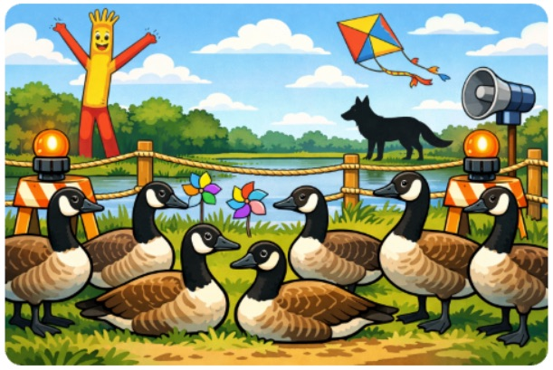
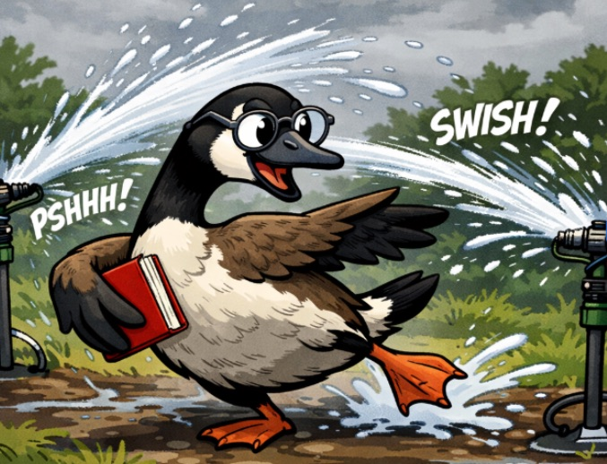
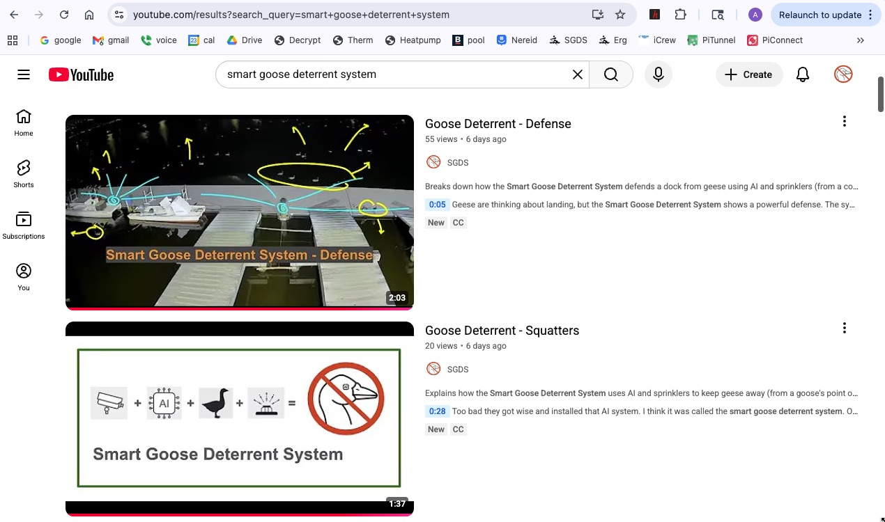
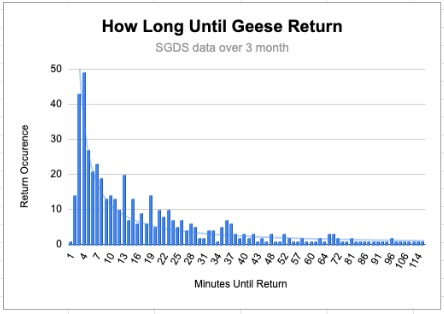

Goose Deterrent - Measuring Success
December 30, 2025
The SGDS team has studied goose behavior around the clock for two seasons. Using 10 cameras across 6 locations, we've collected more than 756 days of footage, over 700,000 minutes of real-time monitoring with AI, much of it running 24/7. Our system found:
- 84,817 geese detected
- 6,666 automatic sprinkler activations
Every goose detection and sprinkler activation was reviewed. Of all the sprinkler activations, there was only one time we did not see geese leave after being sprayed.
For over two seasons, SGDS has proven to be one of the most reliable goose deterrent systems. We challenge any other system to match its level of effectiveness, and have data to back it up. Trained dogs are effective at scaring away geese, but they are only "on duty" a few minutes a day and require a handler. SGDS runs 24/7, automatically, with no human involvement.
Homeowner Reaches Out
December 30, 2025
A homeowner recently reached out for help with his goose problem. He sent a photo of his yard and pleaded for a solution. The image showed pinwheels and flashing lights in the background; neither was scaring away geese.
This story is typical. Someone tries a gadget, it works for a couple of weeks, then the geese come back. They try something else; same result. Eventually, they’re left with a pile of junk, less cash in their pocket, persistent geese, and a lot of frustration.
We were guilty of the same behavior before developing SGDS.
Geese are smarter than you think. They quickly learn what is and isn’t a threat and adapt. That's a big reason why every one of those so-called "deterrents" eventually fails: rope fences, pinwheels, flashing lights, noise-makers, decoys, balloon men, kites, and motion-activated sprinklers.
Humans, on the other hand, are not as smart as you think. They forget to move decoys, forget to turn off motion-activated sprinklers (when people are around), or decide that a 10-foot-tall “dancing” balloon man belongs on beautiful waterfront property.
Impact Sprinklers and Goose Behaviour
December 30, 2025
SGDS uses impact sprinklers, the same type used for watering lawns. They project a stream of water a 15 to 30 foot radius and sweep around a preset arc. A typical encounter goes like this: a few geese swim into range, the SGDS AI detects geese, it activates a sprinkler, the stream sweeps around and scares the geese, and they leave. If you’ve ever chased a goose with a garden hose and sprayer, you understand how well it works. We just removed humans from the equation.
Geese quickly learn sprinkler location and adjust their approach to avoid the strongest part of the stream. Newcomers take the hardest hit.
Geese have a surprisingly systematic way of testing sprinkler range. On some nights, you can see a large flock (we've seen up to 94 geese) floating just outside the perimeter, sending in “scouts.” Each scout inches forward until it is grazed by the stream. Depending on how hard it’s hit, the goose retreats or holds position. After several attempts, the flock learns the exact range of the sprinklers. Geese are smart.
Geese keep testing boundaries because humans constantly change them. Humans leave towels, buckets, and chairs in front of and on top of sprinklers. Humans are not as smart as you think.
If you’ve seen the movie Caddyshack, you know the unmistakable chika-chika sound that an impact sprinkler makes. Geese (and gophers) know it too. Except when acting as scouts, geese immediately move when sprinklers turn on, often without even looking at the sprinkler. They hear ‘em, and they react.
Interestingly, geese usually move just fast enough to avoid being hit by the stream. They rarely take a direct hit. Are they calculating their escape based on sound alone? Possibly.
Geese will sit calmly through a heavy rainstorm, but the moment a sprinkler activates, they move. Perhaps there is something they do not like about being hit from the side vs. above.
Sprinklers are a triple threat: geese can hear them, see them, and feel them. That combination is what makes sprinklers an effective goose deterrent.
Put simply: GEESE HATE IMPACT SPRINKLERS.
SGDS On YouTube
December 17, 2025
Check out some cool videos on our new YouTube channel: Smart Goose Deterrent System.
Geese Are Persistent
October 8, 2025
SGDS logs a lot of information about each goose visit. To date we have collected more than ½ million events. In the past (November 2024) we have shown that geese attempt to invade at all hours of the day. We have also shown that geese keep coming back day after day. Below is a new graph that shows once you send geese away, they will likely return within minutes. Is it the same geese that return, or different ones? We don’t know (yet). So what does this mean? Shining green lasers and using trained dogs only works when people and dogs are on the job. Once you put that laser away or pack up your dogs, the geese will be back in minutes. Good thing SGDS runs 24/7.
Geese Scatter
September 11, 2025
SGDS keeps ~25 geese off dock!
100 Geese Do Not Land On Dock
August 17, 2025
Almost 100 geese wanted nothing to do with Riverside Boat Club's dock. They have learned that they can not outsmart the Smart Goose Deterrent System.

Ways To Keep Dogs From Pooping In Your Yard
August 9, 2025
The other day, my friend was walking his dogs by a perfectly manicured lawn. It had one of those signs with a dog squatting. It said "no poop please". He called me and said, “You should tweak the Smart Goose Deterrent System to spray dogs that poop and pee on people’s front yard". I told him I was already kinda doing that.
There was a stray dog that used to do his business in my backyard. I tweaked the configuration on my SGDS QA environment to consider dogs as unfriendly animals and let the system do its thing. It was funny watching video of that stray dog getting sprayed the first time. He did not know what hit him. He looked over his shoulder and gave the sprinkler a WTF look. Then the sprinkler came back around and hit him again. It’s been eight weeks since that dog visited.
I am a dog owner. Dogs pooping in a neighbors yard is an owner problem not a dog problem. Owners should not let their dogs out unattended or unleashed. Owners should clean up after their dogs.
I think the thing to do if SGDS finds a dog pooping in your yard is to make sure sprinklers are aimed outward and hit the owners.
FYI, my QA environment watches for deer around my garden too.
Migratory Bird Treaty Act - Goose Harassment
July 23, 2025
I am not a goose hater, I just don’t like it when they poop on my rowing club’s dock.
The other day I texted an attaboy to another member of my club when he shooed away geese from the corner of our dock. I jokingly wrote to him, don’t worry, “harassing” geese is not in violation of the Migratory Bird Treaty Act. This spurred an interesting conversation between me and another member of my club. They said “harassment” is a violation of the MBTA. We started dueling each other with Google searches, each finding results that supported our position. Some findings mentioned “harassing” birds as a violation of the law and others did not. This confused me. In the end I went to the Cornell Law School website and read the original MBTA statute. Then I examined the changes to the statute over the years. No mention of “harassing” as a violation. Finally, I noticed that some of our search results were for the MBTA and others were for the Endangered Species Act. The MBTA does not include "harassing" as a violation, the ESA does. Bingo!
The Canada Goose was considered an endangered species at one time, but removed from the list in 2001.
Interesting (or maybe not) in June 2024 the Chevron Doctrine was overturned. This took away the ability for government agencies, like the U.S. Fish and Wildlife Service, to interpret the “their own” laws and put it in the hands of the courts. As recently as May 2025, the courts were arguing the meaning of the key words “harm” and “take” in the Endangered Species Act. “Take” includes “harass” in the ESA definition. This whole thing gets messier than a dock visited by a flock (or should that be a gaggle, skein, wedge, or team) of geese.
I am not a goose hater, nor am I a lawyer. I will likely never dig so deeply into the Migratory Bird Treaty Act again. I definitely consider yelling at geese or spraying them with water as “harassment” and fair game. Hopefully I will not end up behind bars for creating a system that uses AI to spray geese. My “take” is, if we do not want geese in “our” space, we need to outsmart them, not harm them.
Success At Nereid Boat Club
June 17, 2025
"Love catching them before they even land! That’s perfect." AW
Rower Comments
June 12, 2025
"The system works great, you should get a Noble (Nobel?) Prize for what you have done." LR
New Cameras
May 2025
SGDS has been online at the Riverside Boat Club for several weeks this year (their second season with SGDS). The new cameras are performing better than expected:
- sharper images: SGDS captures geese before they even step onto the dock.
- clearer night vision: A higher percentage of geese are found in the dark.
- wider field of view: With two cameras, RBC can now cover their entire dock, all 170 feet, with a little extra to spare.
Nereid Boat Club
May 2025
We are working with the Nereid Boat Club in Rutherford, NJ to install SGDS on their dock.
System Improvements
Jan 2025
We've spent the winter making improvements to SGDS. We are getting closer to a shrink-wrapped product.
- using off-the-shelf security cameras
- using off-the-shelf smart valve controllers
- improved remote hardware support
- explored other AI and image recognition tools
- added advanced filters to eliminate problematic regions
Best Quotes From 2024
Jan 2025
- "The current system is helping immensely! Awesome!" LO
- "This is totally working." CGB
- "It really is amazing. Thank you." AB
- "As a person who has faced this horror show (goose poop) for years and has spent 5-15 minutes each day cleaning it up, I really appreciate this work." TVC
- "You've accomplished something that no one in the history of our club has EVER accomplished. And perhaps never accomplished at any other club. Amazing!" JT
- "One of the best AI applications I have heard of!" RE
- "I'm gonna start using the SGDS as an example when I talk to clients about AI/ML." AX
2024 Year In Review
November 2024
Now that the rowing season is coming to an end, let's reflect back on the progress we made with the Smart Goose Deterrent System in 2024.
We appreciate working with the Riverside Boat Club in Cambridge, MA. They provided an ideal environment for testing: lots of geese, rowers, cooperation, and feedback.
SGDS started as an idea in February, and quickly evolved into a system that worked remarkably well.

All along the way, we examined every frame of data collected by SGDS, to make sure it was behaving as desired. We found out that we needed to teach the AI how to deal with some interesting situations:
- penguins do not live in Boston
- great blue herons are our friends
- light reflections off the water are not flocks of small birds
- spiders crawling over the camera lens need to be dealt with
We learned that geese are very persistent. They constantly tested the boundaries of the SGDS sprinklers. They learned exactly where they could hang out and be safe. On some mornings, you could see what looked like a hundred geese swimming by the dock, just out of range of sprinklers.
We examined data from the 2nd half of the season. Geese visited at all hours of the day, mostly when people were not on the dock. Most RBC rowers launch in the morning and evening so we disabled sprinklers in those windows.

In the 2nd half of the season, SGDS found geese over 1400 times (77 times on the busiest day).

If you believe a goose produces 1 pound of poop per day, hangs out for 4 hours when it visits the dock, and travels in groups of 4 or more: we estimate that we kept 2000 pounds of poop off the dock!
On these cold November mornings, SGDS is shut down. Sadly, the geese are back, and they are making a mess of RBC's dock. The cold weather rowers have had to learn to sweep poop again (and they might not be as quick to learn as the geese). We are happy knowing SGDS made a difference for RBC this season and look forward to doing battle again next year.